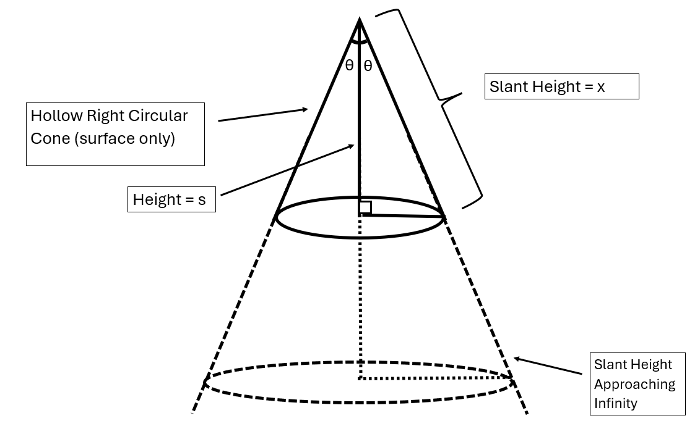

Theorem and Proof:
Theorem Statement: For every positive real number r, there exists a point on the surface of a hollow infinite cone where the radius of the circular cross-section is exactly r.
Proof: We are working with a hollow cone that extends infinitely along its slant height. Let the slant height be represented by x, and the fixed half-angle of the cone be θ, where 0 < θ < 180° (excluding the endpoints to avoid degeneracy).
Let:
Define the radius function:
r(x) = x .sin(θ)
Step 1: Rational radii (r ∈ Q, r > 0):
Since r is any positive real number and sin(θ) is also positive, this equation always yields a valid, positive slant height x. Therefore, for every positive radius r, there exists a corresponding point on the slant height of the cone where a circle of that radius lies. Thus, the surface of the cone contains a circle of every possible positive radius, as claimed.
Theorem Statement: For every positive real number r, there exists a point on the surface of a hollow infinite cone where the radius of the circular cross-section is exactly r.
Proof: We are working with a hollow cone that extends infinitely along its slant height. Let the slant height be represented by x, and the fixed half-angle of the cone be θ, where 0 < θ < 180° (excluding the endpoints to avoid degeneracy).
Let:
- x = slant height (variable)
- θ = fixed half-angle of the cone (0° < θ < 180°)
- r(x) = radius at slant height x
Define the radius function:
r(x) = x .sin(θ)
Step 1: Rational radii (r ∈ Q, r > 0):
- Choose any rational radius r > 0
- Solve for slant height:
- x = r / sin(θ)
- Since sin(θ) is a constant > 0, x > 0
- So, every positive rational radius has a valid location on the cone
- Rational numbers are dense in real numbers
- Function r(x) = x.sin(θ) is continuous
- ⇒ All positive real radii are also achieved on the cone
Since r is any positive real number and sin(θ) is also positive, this equation always yields a valid, positive slant height x. Therefore, for every positive radius r, there exists a corresponding point on the slant height of the cone where a circle of that radius lies. Thus, the surface of the cone contains a circle of every possible positive radius, as claimed.
